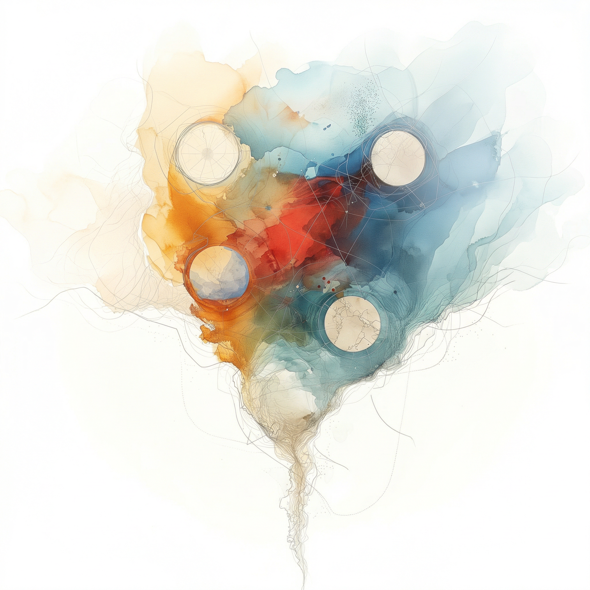
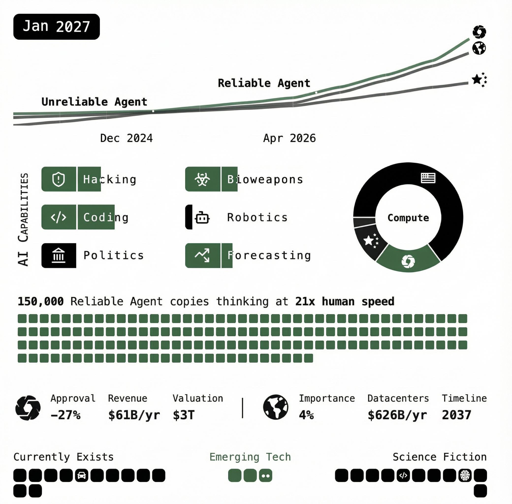
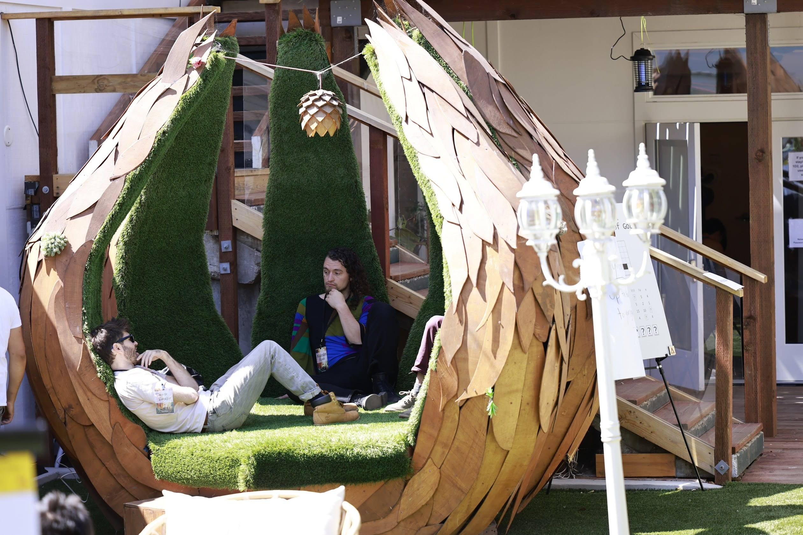
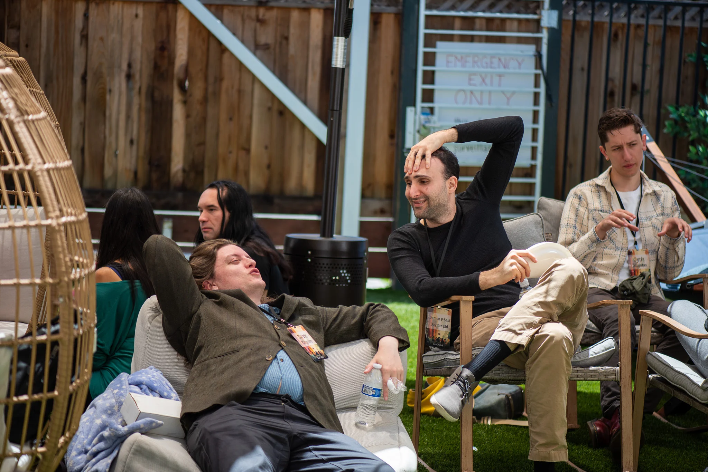
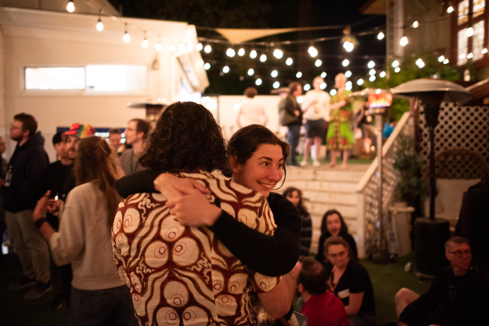
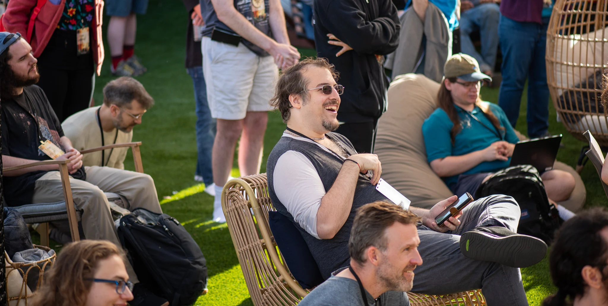

Lightcone Infrastructure
Humanity's future could be vast, spanning billions of flourishing galaxies, reaching far into our future light cone [1]. However, it seems humanity might never achieve this; we might not even survive the century. To increase our odds, we build services and infrastructure for people who are helping humanity navigate this crucial period.
This is our mission and it in part determines what projects we work on. For concrete examples of our projects in infrastructure, tech, and community, see our projects section below.


LessWrong launched in 2009, when discussing AI risk was fringe and niche. Today, the term 'AI alignment'1, developed there, is industry standard, its users lead safety teams at every major AI lab, and its arguments influence policymakers at the highest levels. Most AI safety papers from major labs have a companion LessWrong post.
LessWrong serves millions of users as one of the largest active AI x-risk research hubs, and is arguably the best place to start if you want to understand what the future of our civilizations will look like more broadly. According to us, the best public online discussions on these and related topics happen on LessWrong.

Lighthaven is a space dedicated to hosting events and programs that help people think better and improve humanity's long-term trajectory. It was designed from the ground up by people who run events for people who run events with this mission statement as a guiding principle. This is why it is dominated by cozy nooks and whiteboards and late night fire pits, rather than lecture halls and meeting rooms and mind numbing office ceiling tiles.
Since 2023, we've hosted some of the most important gatherings at the intersection of AI, science, and intellectual culture — from David Chalmers exploring AI consciousness at Eleos ConCon, to talented high schoolers learning applied rationality at SPARC, to progress studies pioneers at the Progress Conference. We've hosted multi-week programs like the MATS AI safety fellowship and Vitalist Bay's 8 weeks of longevity science, as well as intimate offsites and individual residencies.

In 2024 we began providing website design, branding, and marketing for high-stakes public research communication. Our work on AI 2027 helped the piece reach 9M+ direct views and an estimated 100M through secondary coverage. It was read by the US vice president and covered in hundreds of news stories across a dozen languages. We built the website and marketing materials for MIRI's If Anyone Builds It, Everyone Dies, which became a NYT bestseller. We built the Deciding to Win site in one week (including three all-nighters), and the report was covered by essentially every major US publication.
This work matters because presentation dramatically affects reach. We seem to be unusually well-positioned to do it, combining design skill, technical ability, and understanding of the ideas. Multiple teams have approached us since AI 2027 asking for similar help. We're excited to continue offering this to projects that aim to help the public reason well about critical decision points for humanity's future.




Intellectual progress clusters around scenes: the Vienna Circle, the Royal Society, Bell Labs. Lightcone is positioned to support such scenes; we run both an online forum (LessWrong) and a physical venue (Lighthaven).
Our flagship events:
LessOnline: A 600+ attendee weekend conference featuring Eliezer Yudkowsky, Scott Alexander, Zvi Mowshowitz, Dwarkesh Patel, Scott Sumner, and David Friedman.
Inkhaven: A 30-day writing residency where participants publish daily or leave. In November 2025, all attendees completed the residency. Their posts averaged 50 Karma vs. 28 for other posts, 80% higher.
We started experimenting with internal events in 2023. Early results are strong, and we plan to expand this part of our operation.
Lightcone is a culturally thick organization. It has a particular culture and a particular way of doing things. As a first, lossy approximation, you can imagine something that mixes the intensity of bay area start up culture with the epistemic norms and aspirational virtues of LessWrong style rationality.
Every sunday, our CEO writes a mini-essay about one of Lightcone's operating principles. Oliver recently edited and canonized these essays into a sequence on LessWrong which you can read to get a less lossy sense of what our work culture is like. It is still a work in progress.
Lightcone is currently hiring for the following roles:
You can contact us on intercom. We aim to have fast response times there and appreciate questions about our work. If you are considering donating $1,000 or more but have questions, please let us know and we will make sure that Oliver gets back to you.
Your support enables us to build the infrastructure humanity needs to navigate this critical century.